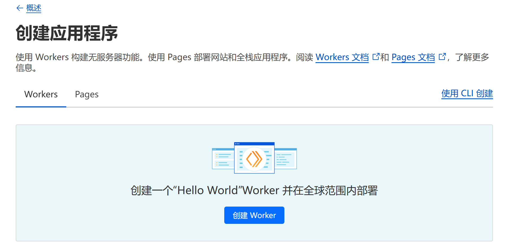

上一篇博文讲到了docker如何添加加速镜像，但是加速镜像地址是用的别人的，这里我们来注册自己的加速镜像地址
注册账号
注册cloudflare账号
部署脚本
左侧菜单中 Workers 和 Pages –> 概述 –> 创建
创建worker 
修改名称，也可用默认的名称，点击部署
点
编辑代码复制以下代码到worker.js编辑窗口中,注意1中的域名可以直接填写2处的域名，也可以是你自己的域名，你自己的域名必须是通过cloudflare解析的
1
2
3
4
5
6
7
8
9
10
11
12
13
14
15
16
17
18
19
20
21
22
23
24
25
26
27
28
29
30
31
32
33
34
35
36
37
38
39
40
41
42
43
44
45
46
47
48
49
50
51
52
53
54
55
56
57
58
59
60
61
62
63
64
65
66
67
68
69
70
71
72
73
74
75
76
77
78
79
80
81
82
83
84
85
86
87
88
89
90
91
92
93
94
95
96
97
98
99
100
101
102
103
104
105
106
107
108
109
110
111
112
113
114
115
116
117
118
119
120
121
122
123
124
125
126
127
128
129
130
131
132
133
134
135
136
137
138
139
140
141
142
143
144
145
146
147
148
149
150
151
152
153
154
155
156
157
158
159
160
161
162
163
164
165
166
167
168
169
170
171
172
173
174
175
176
177
178
179
180
181
182
183
184
185
186
187
188
189
190
191
192
193
194
195
196
197
198
199
200
201
202
203
204
205
206
207
208
209
210
211
212
213
214
215
216
217
218
219
220
221
222
223
224
225
226
227
228
229
230
231
232
233
234
235
236
237
238
239
240
241
242
243
244
245
246
247
248
249
250
251
252
253
254
255
256
257
258
259
260
261
262
263
264
265
266
267
268
269
270
271
272
273
274
275
276
277
278
279
280
281
282
283
284
285
286
287
288
289
290
291
292
293
294
295
296
297
298
299
300
301
302
303
304
305
306
307
308
309
310
311
312
313
314
315
316
317
318
319
320
321
322
323
324
325
326
327
328
329
330
331
332
333
334
335
336
337
338
339
340
341
342
343
344
345
346
347
348
349
350
351
352
353
354
355
356
357
358
359
360
361
362
363
364
365
366
367
368
369
370
371
372
373
374
375
376
377
378
379
380
381
382
383
384
385
386
387
388
389
390
391
392
393
394
395
396
397
398
399
400
401
402
403
404
405
406
407
408
409
410
411
412
413
414
415
416
417
418
419
420
421
422
423
424
425
426
427
428
429
430
431
432
433
434
435
436
437
438
439
440
441
442
443
444
445
446
447
448
449
450
// _worker.js
// Docker镜像仓库主机地址
let hub_host = 'registry-1.docker.io';
// Docker认证服务器地址
const auth_url = 'https://auth.docker.io';
// 自定义的工作服务器地址
let workers_url = 'https://xxx/';
let 屏蔽爬虫UA = ['netcraft'];
// 根据主机名选择对应的上游地址
function routeByHosts(host) {
// 定义路由表
const routes = {
// 生产环境
"quay": "quay.io",
"gcr": "gcr.io",
"k8s-gcr": "k8s.gcr.io",
"k8s": "registry.k8s.io",
"ghcr": "ghcr.io",
"cloudsmith": "docker.cloudsmith.io",
"nvcr": "nvcr.io",
// 测试环境
"test": "registry-1.docker.io",
};
if (host in routes) return [ routes[host], false ];
else return [ hub_host, true ];
}
/** @type {RequestInit} */
const PREFLIGHT_INIT = {
// 预检请求配置
headers: new Headers({
'access-control-allow-origin': '*', // 允许所有来源
'access-control-allow-methods': 'GET,POST,PUT,PATCH,TRACE,DELETE,HEAD,OPTIONS', // 允许的HTTP方法
'access-control-max-age': '1728000', // 预检请求的缓存时间
}),
}
/**
* 构造响应
* @param {any} body 响应体
* @param {number} status 响应状态码
* @param {Object<string, string>} headers 响应头
*/
function makeRes(body, status = 200, headers = {}) {
headers['access-control-allow-origin'] = '*' // 允许所有来源
return new Response(body, { status, headers }) // 返回新构造的响应
}
/**
* 构造新的URL对象
* @param {string} urlStr URL字符串
*/
function newUrl(urlStr) {
try {
return new URL(urlStr) // 尝试构造新的URL对象
} catch (err) {
return null // 构造失败返回null
}
}
function isUUID(uuid) {
// 定义一个正则表达式来匹配 UUID 格式
const uuidRegex = /^[0-9a-f]{8}-[0-9a-f]{4}-[4][0-9a-f]{3}-[89ab][0-9a-f]{3}-[0-9a-f]{12}$/i;
// 使用正则表达式测试 UUID 字符串
return uuidRegex.test(uuid);
}
async function nginx() {
const text = `
<!DOCTYPE html>
<html>
<head>
<title>Welcome to nginx!</title>
<style>
body {
width: 35em;
margin: 0 auto;
font-family: Tahoma, Verdana, Arial, sans-serif;
}
</style>
</head>
<body>
<h1>Welcome to nginx!</h1>
<p>If you see this page, the nginx web server is successfully installed and
working. Further configuration is required.</p>
<p>For online documentation and support please refer to
<a href="http://nginx.org/">nginx.org</a>.<br/>
Commercial support is available at
<a href="http://nginx.com/">nginx.com</a>.</p>
<p><em>Thank you for using nginx.</em></p>
</body>
</html>
`
return text;
}
async function searchInterface() {
const text = `
<!DOCTYPE html>
<html>
<head>
<title>Docker Hub Search</title>
<style>
body {
font-family: Arial, sans-serif;
display: flex;
flex-direction: column;
align-items: center;
justify-content: center;
height: 100vh;
margin: 0;
background: linear-gradient(to right, rgb(28, 143, 237), rgb(29, 99, 237));
}
.logo {
margin-bottom: 20px;
}
.search-container {
display: flex;
align-items: center;
}
#search-input {
padding: 10px;
font-size: 16px;
border: 1px solid #ddd;
border-radius: 4px;
width: 300px;
margin-right: 10px;
}
#search-button {
padding: 10px;
background-color: rgba(255, 255, 255, 0.2); /* 设置白色，透明度为10% */
border: none;
border-radius: 4px;
cursor: pointer;
width: 44px;
height: 44px;
display: flex;
align-items: center;
justify-content: center;
}
#search-button svg {
width: 24px;
height: 24px;
}
</style>
</head>
<body>
<div class="logo">
<svg xmlns="http://www.w3.org/2000/svg" viewBox="0 0 24 18" fill="#ffffff" width="100" height="75">
<path d="M23.763 6.886c-.065-.053-.673-.512-1.954-.512-.32 0-.659.03-1.01.087-.248-1.703-1.651-2.533-1.716-2.57l-.345-.2-.227.328a4.596 4.596 0 0 0-.611 1.433c-.23.972-.09 1.884.403 2.666-.596.331-1.546.418-1.744.42H.752a.753.753 0 0 0-.75.749c-.007 1.456.233 2.864.692 4.07.545 1.43 1.355 2.483 2.409 3.13 1.181.725 3.104 1.14 5.276 1.14 1.016 0 2.03-.092 2.93-.266 1.417-.273 2.705-.742 3.826-1.391a10.497 10.497 0 0 0 2.61-2.14c1.252-1.42 1.998-3.005 2.553-4.408.075.003.148.005.221.005 1.371 0 2.215-.55 2.68-1.01.505-.5.685-.998.704-1.053L24 7.076l-.237-.19Z"></path>
<path d="M2.216 8.075h2.119a.186.186 0 0 0 .185-.186V6a.186.186 0 0 0-.185-.186H2.216A.186.186 0 0 0 2.031 6v1.89c0 .103.083.186.185.186Zm2.92 0h2.118a.185.185 0 0 0 .185-.186V6a.185.185 0 0 0-.185-.186H5.136A.185.185 0 0 0 4.95 6v1.89c0 .103.083.186.186.186Zm2.964 0h2.118a.186.186 0 0 0 .185-.186V6a.186.186 0 0 0-.185-.186H8.1A.185.185 0 0 0 7.914 6v1.89c0 .103.083.186.186.186Zm2.928 0h2.119a.185.185 0 0 0 .185-.186V6a.185.185 0 0 0-.185-.186h-2.119a.186.186 0 0 0-.185.186v1.89c0 .103.083.186.185.186Zm-5.892-2.72h2.118a.185.185 0 0 0 .185-.186V3.28a.186.186 0 0 0-.185-.186H5.136a.186.186 0 0 0-.186.186v1.89c0 .103.083.186.186.186Zm2.964 0h2.118a.186.186 0 0 0 .185-.186V3.28a.186.186 0 0 0-.185-.186H8.1a.186.186 0 0 0-.186.186v1.89c0 .103.083.186.186.186Zm2.928 0h2.119a.185.185 0 0 0 .185-.186V3.28a.186.186 0 0 0-.185-.186h-2.119a.186.186 0 0 0-.185.186v1.89c0 .103.083.186.185.186Zm0-2.72h2.119a.186.186 0 0 0 .185-.186V.56a.185.185 0 0 0-.185-.186h-2.119a.186.186 0 0 0-.185.186v1.89c0 .103.083.186.185.186Zm2.955 5.44h2.118a.185.185 0 0 0 .186-.186V6a.185.185 0 0 0-.186-.186h-2.118a.185.185 0 0 0-.185.186v1.89c0 .103.083.186.185.186Z"></path>
</svg>
</div>
<div class="search-container">
<input type="text" id="search-input" placeholder="Search Docker Hub">
<button id="search-button">
<svg focusable="false" aria-hidden="true" viewBox="0 0 24 24" fill="none" xmlns="http://www.w3.org/2000/svg">
<path d="M21 21L16.65 16.65M19 11C19 15.4183 15.4183 19 11 19C6.58172 19 3 15.4183 3 11C3 6.58172 6.58172 3 11 3C15.4183 3 19 6.58172 19 11Z" stroke="white" fill="none" stroke-width="2" stroke-linecap="round" stroke-linejoin="round"></path>
</svg>
</button>
</div>
<script>
function performSearch() {
const query = document.getElementById('search-input').value;
if (query) {
window.location.href = '/search?q=' + encodeURIComponent(query);
}
}
document.getElementById('search-button').addEventListener('click', performSearch);
document.getElementById('search-input').addEventListener('keypress', function(event) {
if (event.key === 'Enter') {
performSearch();
}
});
</script>
</body>
</html>
`;
return text;
}
export default {
async fetch(request, env, ctx) {
const getReqHeader = (key) => request.headers.get(key); // 获取请求头
let url = new URL(request.url); // 解析请求URL
const userAgentHeader = request.headers.get('User-Agent');
const userAgent = userAgentHeader ? userAgentHeader.toLowerCase() : "null";
if (env.UA) 屏蔽爬虫UA = 屏蔽爬虫UA.concat(await ADD(env.UA));
workers_url = `https://${url.hostname}`;
const pathname = url.pathname;
// 获取请求参数中的 ns
const ns = url.searchParams.get('ns');
const hostname = url.searchParams.get('hubhost') || url.hostname;
const hostTop = hostname.split('.')[0]; // 获取主机名的第一部分
let checkHost; // 在这里定义 checkHost 变量
// 如果存在 ns 参数，优先使用它来确定 hub_host
if (ns) {
if (ns === 'docker.io') {
hub_host = 'registry-1.docker.io'; // 设置上游地址为 registry-1.docker.io
} else {
hub_host = ns; // 直接使用 ns 作为 hub_host
}
} else {
checkHost = routeByHosts(hostTop);
hub_host = checkHost[0]; // 获取上游地址
}
const fakePage = checkHost ? checkHost[1] : false; // 确保 fakePage 不为 undefined
console.log(`域名头部: ${hostTop}\n反代地址: ${hub_host}\n伪装首页: ${fakePage}`);
const isUuid = isUUID(pathname.split('/')[1].split('/')[0]);
if (屏蔽爬虫UA.some(fxxk => userAgent.includes(fxxk)) && 屏蔽爬虫UA.length > 0) {
// 首页改成一个nginx伪装页
return new Response(await nginx(), {
headers: {
'Content-Type': 'text/html; charset=UTF-8',
},
});
}
const conditions = [
isUuid,
pathname.includes('/_'),
pathname.includes('/r/'),
pathname.includes('/v2/repositories'),
pathname.includes('/v2/user'),
pathname.includes('/v2/orgs'),
pathname.includes('/v2/_catalog'),
pathname.includes('/v2/categories'),
pathname.includes('/v2/feature-flags'),
pathname.includes('search'),
pathname.includes('source'),
pathname == '/',
pathname == '/favicon.ico',
pathname == '/auth/profile',
];
if (conditions.some(condition => condition) && (fakePage === true || hostTop == 'docker')) {
if (env.URL302) {
return Response.redirect(env.URL302, 302);
} else if (env.URL) {
if (env.URL.toLowerCase() == 'nginx') {
//首页改成一个nginx伪装页
return new Response(await nginx(), {
headers: {
'Content-Type': 'text/html; charset=UTF-8',
},
});
} else return fetch(new Request(env.URL, request));
} else if (url.pathname == '/'){
return new Response(await searchInterface(), {
headers: {
'Content-Type': 'text/html; charset=UTF-8',
},
});
}
const newUrl = new URL("https://registry.hub.docker.com" + pathname + url.search);
// 复制原始请求的标头
const headers = new Headers(request.headers);
// 确保 Host 头部被替换为 hub.docker.com
headers.set('Host', 'registry.hub.docker.com');
const newRequest = new Request(newUrl, {
method: request.method,
headers: headers,
body: request.method !== 'GET' && request.method !== 'HEAD' ? await request.blob() : null,
redirect: 'follow'
});
return fetch(newRequest);
}
// 修改包含 %2F 和 %3A 的请求
if (!/%2F/.test(url.search) && /%3A/.test(url.toString())) {
let modifiedUrl = url.toString().replace(/%3A(?=.*?&)/, '%3Alibrary%2F');
url = new URL(modifiedUrl);
console.log(`handle_url: ${url}`);
}
// 处理token请求
if (url.pathname.includes('/token')) {
let token_parameter = {
headers: {
'Host': 'auth.docker.io',
'User-Agent': getReqHeader("User-Agent"),
'Accept': getReqHeader("Accept"),
'Accept-Language': getReqHeader("Accept-Language"),
'Accept-Encoding': getReqHeader("Accept-Encoding"),
'Connection': 'keep-alive',
'Cache-Control': 'max-age=0'
}
};
let token_url = auth_url + url.pathname + url.search;
return fetch(new Request(token_url, request), token_parameter);
}
// 修改 /v2/ 请求路径
if ( hub_host == 'registry-1.docker.io' && /^\/v2\/[^/]+\/[^/]+\/[^/]+$/.test(url.pathname) && !/^\/v2\/library/.test(url.pathname)) {
//url.pathname = url.pathname.replace(/\/v2\//, '/v2/library/');
url.pathname = '/v2/library/' + url.pathname.split('/v2/')[1];
console.log(`modified_url: ${url.pathname}`);
}
// 更改请求的主机名
url.hostname = hub_host;
// 构造请求参数
let parameter = {
headers: {
'Host': hub_host,
'User-Agent': getReqHeader("User-Agent"),
'Accept': getReqHeader("Accept"),
'Accept-Language': getReqHeader("Accept-Language"),
'Accept-Encoding': getReqHeader("Accept-Encoding"),
'Connection': 'keep-alive',
'Cache-Control': 'max-age=0'
},
cacheTtl: 3600 // 缓存时间
};
// 添加Authorization头
if (request.headers.has("Authorization")) {
parameter.headers.Authorization = getReqHeader("Authorization");
}
// 发起请求并处理响应
let original_response = await fetch(new Request(url, request), parameter);
let original_response_clone = original_response.clone();
let original_text = original_response_clone.body;
let response_headers = original_response.headers;
let new_response_headers = new Headers(response_headers);
let status = original_response.status;
// 修改 Www-Authenticate 头
if (new_response_headers.get("Www-Authenticate")) {
let auth = new_response_headers.get("Www-Authenticate");
let re = new RegExp(auth_url, 'g');
new_response_headers.set("Www-Authenticate", response_headers.get("Www-Authenticate").replace(re, workers_url));
}
// 处理重定向
if (new_response_headers.get("Location")) {
return httpHandler(request, new_response_headers.get("Location"));
}
// 返回修改后的响应
let response = new Response(original_text, {
status,
headers: new_response_headers
});
return response;
}
};
/**
* 处理HTTP请求
* @param {Request} req 请求对象
* @param {string} pathname 请求路径
*/
function httpHandler(req, pathname) {
const reqHdrRaw = req.headers;
// 处理预检请求
if (req.method === 'OPTIONS' &&
reqHdrRaw.has('access-control-request-headers')
) {
return new Response(null, PREFLIGHT_INIT);
}
let rawLen = '';
const reqHdrNew = new Headers(reqHdrRaw);
const refer = reqHdrNew.get('referer');
let urlStr = pathname;
const urlObj = newUrl(urlStr);
/** @type {RequestInit} */
const reqInit = {
method: req.method,
headers: reqHdrNew,
redirect: 'follow',
body: req.body
};
return proxy(urlObj, reqInit, rawLen);
}
/**
* 代理请求
* @param {URL} urlObj URL对象
* @param {RequestInit} reqInit 请求初始化对象
* @param {string} rawLen 原始长度
*/
async function proxy(urlObj, reqInit, rawLen) {
const res = await fetch(urlObj.href, reqInit);
const resHdrOld = res.headers;
const resHdrNew = new Headers(resHdrOld);
// 验证长度
if (rawLen) {
const newLen = resHdrOld.get('content-length') || '';
const badLen = (rawLen !== newLen);
if (badLen) {
return makeRes(res.body, 400, {
'--error': `bad len: ${newLen}, except: ${rawLen}`,
'access-control-expose-headers': '--error',
});
}
}
const status = res.status;
resHdrNew.set('access-control-expose-headers', '*');
resHdrNew.set('access-control-allow-origin', '*');
resHdrNew.set('Cache-Control', 'max-age=1500');
// 删除不必要的头
resHdrNew.delete('content-security-policy');
resHdrNew.delete('content-security-policy-report-only');
resHdrNew.delete('clear-site-data');
return new Response(res.body, {
status,
headers: resHdrNew
});
}
async function ADD(envadd) {
var addtext = envadd.replace(/[ |"'\r\n]+/g, ',').replace(/,+/g, ','); // 将空格、双引号、单引号和换行符替换为逗号
if (addtext.charAt(0) == ',') addtext = addtext.slice(1);
if (addtext.charAt(addtext.length - 1) == ',') addtext = addtext.slice(0, addtext.length - 1);
const add = addtext.split(',');
return add;
}
再次点击部署，如果你没有自己的域名就可以结束了，把上一步2处的域名作为上一篇博文中的一个代理使用了
把注册的域名绑定到脚本
域名注册
参考资料
本文会经常更新，请阅读原文： https://dashenxian.github.io/post/%E6%B7%BB%E5%8A%A0%E8%87%AA%E5%B7%B1%E5%BE%97docker%E5%8A%A0%E9%80%9F%E9%95%9C%E5%83%8F ，以避免陈旧错误知识的误导，同时有更好的阅读体验。

本作品采用 知识共享署名-非商业性使用-相同方式共享 4.0 国际许可协议 进行许可。欢迎转载、使用、重新发布，但务必保留文章署名 小神仙 （包含链接： https://dashenxian.github.io ），不得用于商业目的，基于本文修改后的作品务必以相同的许可发布。如有任何疑问，请 与我联系 (125880321@qq.com) 。